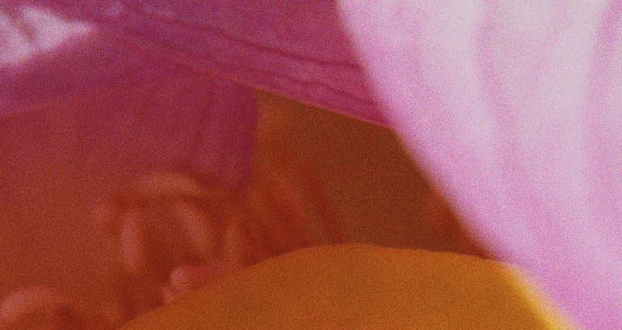
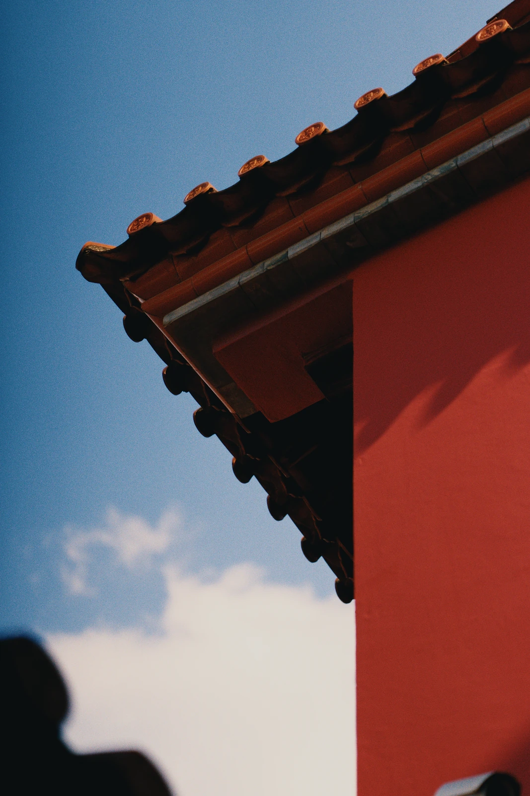
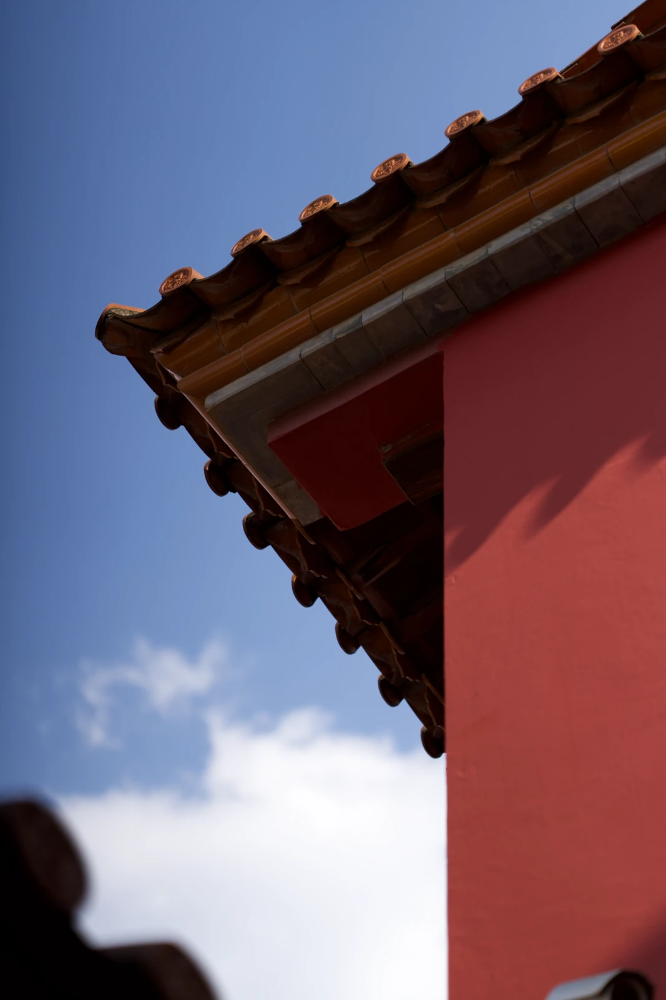
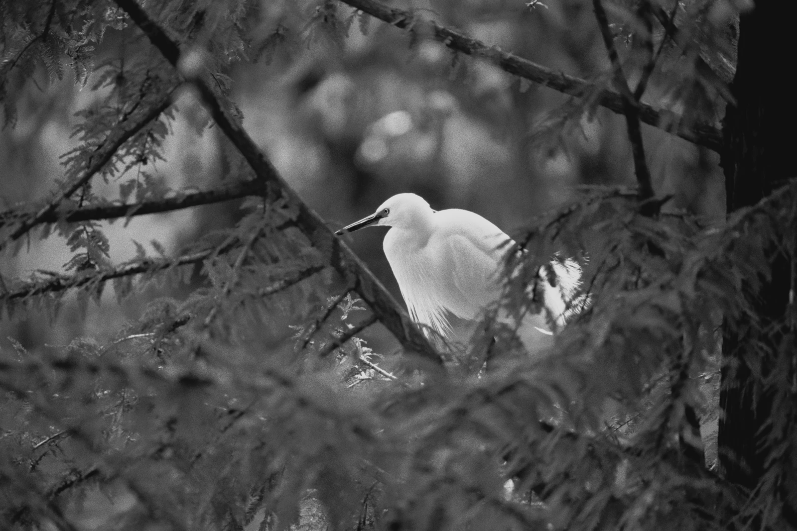

花瓣上的颗粒
先看右上方浅粉花瓣，再看中央偏暗的红色花瓣。拖动滑柄，比较 Apple 解码原片的底纹与整套配方印相后的颗粒。
Kodak Portra 400 · Portra Endura · +0.67 EV
Silverphase
原片与胶片成片
拖动图中的双向滑柄，比较同一张照片的原片与胶片成片。每组照片下方列出所用胶片和相纸。
颗粒与高光边缘

先看右上方浅粉花瓣，再看中央偏暗的红色花瓣。拖动滑柄，比较 Apple 解码原片的底纹与整套配方印相后的颗粒。
Kodak Portra 400 · Portra Endura · +0.67 EV


沿白色灯带向上看暗色横边，拖动滑柄，观察红光能扩散到阴影里的什么位置。
CineStill 800T · Kodak Vision 2383 · 两侧均为 35 mm、1× 颗粒


拖动看车头的红漆，再看暗处车身还能分辨出多少细节。
Fujifilm Eterna 500 · Kodak Vision 2383


把暖色车身与蓝天放在一起看，比较印相后的反差。
CineStill 400D · Kodak Portra Endura


把分界线拖过水珠，比较叶面的绿与水珠上的高光。
Fujifilm Reala 100 · Fujifilm Crystal Archive Type II


比较红墙与蓝天交界处的色彩，再沿屋檐看暗部的变化。
Fujifilm Pro 160NS · Kodak Supra Endura


看黑白转换后，白色羽毛和背景枝条如何分开。
Ilford HP5 Plus · Ilford Multigrade IV RC · 2 号


沿云边拖动，观察亮部的金色和前景剪影。
Kodak Vision3 250D · Kodak Vision 2383